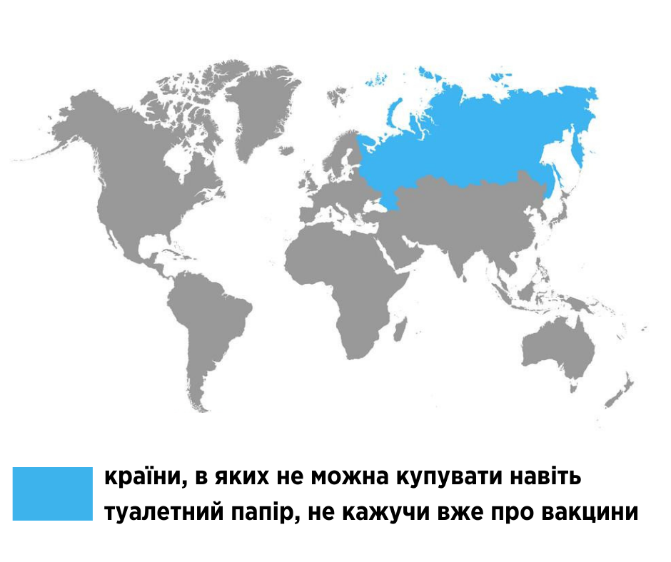

Повернутись до всіх статей
Як правильно користуватись маскою та щитком для захисту від вірусу SARS-CoV-2

Новина про російську вакцину проти COVID-19 обійшла весь світ. Саме Росія є першою країною, яка зареєструвала начебто безпечну та ефективну вакцину, і вже скоро буде вакцинувати своїх громадян.
Але наука і здоровий глузд не на боці росіян. По-перше, у багатьох науковців виникли питання щодо прозорості даних, які аналізували під час перших фаз випробувань. По-друге, російські розробники заявили про вакцину, ще навіть не розпочавши третю фазу клінічних досліджень, лише адекватні результати яких дають право стверджувати, що вона дійсно безпечна та ефективна.
➡ Почнемо з того, якими є фази випробування вакцини, та коли можна говорити про її ефективність і безпеку?
https://bit.ly/2SNQm5C
https://bit.ly/34S9sga
https://bit.ly/3iPDx59
Аби в нас була вакцина, її треба не просто розробити, що в сьогоднішніх реаліях можна зробити досить швидко. Найголовніше — клінічно дослідити на ефективність та безпеку. На це потрібен час, адже є визначені процедури та алгоритми, за якими це роблять.
◾ Є нульова фаза дослідження, коли вакцину тестують на тваринах. На цьому етапі досліджується, які ланки імунної системи активує вакцина, і чи формується імунологічна пам’ять.
◾ Наступний етап — перша фаза клінічних досліджень, вона вже проходить на малій групі людей. Тут перевіряють безпеку та імуногенність вакцини. Тобто чи формує вона імунну відповідь до вакцини, та які часті побічні реакції можуть виникати.
До цієї фази дослідження можуть залучати 10-100 добровольців. У випадку з COVID-19 вони не мають належати до групи ризику мати тяжкий перебіг хвороби. На цій фазі також не роблять рандомізацію (не ділять учасників на групи випадковим чином) та не мають групи, яка отримує плацебо. Це відбувається пізніше.
◾ Під час другої фази досліджують кілька сотень вакцинованих людей та визначають оптимальні схеми вакцинації і, знову ж таки, вивчають безпеку вакцини.
◾ Третя фаза клінічних досліджень вакцини передбачає той самий аналіз безпечності, але найголовніше — ефективності, але на тисячах добровольців. Зазвичай це 30 тисяч або більше учасників. Крім цього, випробування на третій фазі є достатньо великими, щоб виявити більш рідкісні побічні ефекти, які можна пропустити в дослідженнях з меншою кількістю учасників.
Що означає “ефективність” на цьому етапі? Вакцина не лише повинна викликати імунну реакцію, а й ефективно запобігати інфікуванню. Наприклад, FDA наразі встановило оцінку первинної кінцевої точки ефективності для дослідження на третій фазі такої вакцини— вона повинна становити щонайменше 50%. Тобто ефективною вважатиметься вакцина, яка зменшить кількість заражень людей, яких вакцинували, щонайменше вдвічі. https://bit.ly/2SNQm5C
Власне перші дві фази є своєрідним пропуском для проведення такого дослідження, і їхні результати не дають жодних підстав говорити про безпеку та ефективність вакцини.
◾ Є ще одна фаза (четверта) — фаза постмаркетингового нагляду, який відбувається після затвердження та ліцензування вакцини з метою виявлення побічних дій та довгострокових наслідків вакцин.
За даними ВООЗ, станом на 2 жовтня проти COVID-19 є 42 вакцини-кандидати, лише 10 з них знаходяться на третій фазі клінічних досліджень. Ще 151 — на стадії доклінічних випробувань. У цьому документі є перелік виробників 10 вакцин, які на третій стадії, та додаткова інформація про них (на сторінці 18). https://bit.ly/33QBwl3 Серед них є й російська вакцина.
➡ Що з російською вакциною Sputnik V?
Результати перших двох фаз випробувань розробники вакцини опублікували в журналі The Lancet на початку вересня. https://bit.ly/2Im6XeK При чому Путін заяву про ефективну вакцину зробив задовго до публікації — 11 серпня 🙄
У дослідженні брали участь 76 добровольців. Їх поділили на дві рівні групи, яким вводили дві вакцини з різними компонентами аденовірусного вектора. Кожну з груп по 38 добровольців поділили на три підгрупи: 9 добровольців отримали вакцину на основі аденовірусу людини типу 26, ще 9 — на основі аденовірусу типу 5, решта 20 —отримали обидва щеплення з інтервалом у три тижні. Вказано, що вакцина викликала сильну імунну відповідь у всіх 76 добровольців, які брали у ньому участь, а серйозних побічних дій не було зафіксовано. Рівень антитіл порівнювали з людьми, які перехворіли на COVID-19 (він був на однаковому рівні).
Це дослідження викликало багато запитань у науковців з університетів Італії, США, Франції, Німеччини, Великобританії та інших країн. Кілька десятків підписали відкритий лист, висловивши недовіру до результатів цього дослідження. https://bit.ly/33PXPai Зокрема, науковців здивувало те, що у добровольців з різних груп, які отримували різні компоненти, в результаті виявився однаковий рівень антитіл та були співпадіння по рівню активації лімфоцитів. Чому? Бо статистично такий збіг є дуже малоймовірним, тому вони попросили надати розробників більше вихідної інформації. https://bit.ly/2Fl5jZx
Звісно, російські розробники додаткових даних не надали, вказавши, що все, що треба для розуміння результатів, є в дослідженні. Вони досі не опублікували дані досліджень на тваринах, а також не надали точні характеристики людей, з якими порівнювали рівень антитіл добровольців, яких вакцинували. Це все викликає питання.
Наразі Sputnik V знаходиться на третій фазі клінічних випробувань, яке має проводитися за участі 40 тисяч добровольців. Але права на виробництво мільйонів доз вже продані кільком країнам, включаючи Індію, Бразилію та Мексику. Крім того, Росія збиралася залучати інші країни до проведення третьої фази дослідження, деякі з них спочатку розглядали таку можливість, але потім відмовилися. Серед таких країн Індія. https://bit.ly/2H2vwfO
Цікаво, як Росія буквально вигороджує свою розробку від правомірної критики наукової західної спільноти. На офіційному сайті вакцини вказано, що сайт створено для "надання точної та актуальної інформації про Sputnik V та боротьбу з дезінформаційною кампанією, яку розпочали проти вакцини міжнародні медіа”.
Ще з цікавого — це промо відео цієї вакцини (так, Росія навіть зробила проморолик своєї розробки, яка ще навіть не має доведеної безпеки та ефективності). У ньому російський супутник, облітає планету і героїчно знищує вірус SARS-CoV-2. Саме тому таку назву і має вакцина. “Спутнік” — перший штучний супутник, запущений на орбіту Землі у 1957 році, який став символом могутності СССР. Така собі ностальгія та звернення до совєцького минулого, аби пробудити патріотизм у громадян, і тикнути в обличчя всьому світу свою начебто неймовірну наукову спроможність у перегонах з розробки такої важливої для світу вакцини.
Що маємо у підсумку? Вакцину, яка ще не пройшла важливу фазу клінічних досліджень на людях, тому про її ефективність та безпеку говорити ще дуже і дуже рано. При цьому заплановано, що масова вакцинація в Росії недоказовою поки вакциною має розпочатися вже незабаром. А деякі українські депутати зі “Слуг” вже дають заяви, що Україна буде змушена купувати цю вакцину, якщо вона доведе свою ефективність 🤯 https://bit.ly/3nH04EN
Україна в жодному разі не повинна купувати будь-які ліки або вакцини у країни-агресора, яка окупувала наші території і веде проти нас війну. Крім того, що така ідея є просто зухвало цинічною по відношенню до всіх українців, ми не можемо витратити кошти на сумнівну російську вакцину, якість і безпеку якої неможливо буде гарантувати і перевірити через те, що виробництво знаходиться на території країни-агресора.
Скоріше за все вам байдуже, кого і чим вакцинуватимуть в Росії 😏 Але неякісна вакцина чи серйозні побічні дії внаслідок щеплення нею можуть мати дуже небезпечні наслідки для всіх нас. Серед них — величезний підрив довіри до вакцин, який і так став серйозною загрозою для людства. В час стрімкого поширення вірусу та інших небезпечних хвороб — це дуже небезпечно.
Джерело: офіційна сторінка Уляни Супрун у Facebook